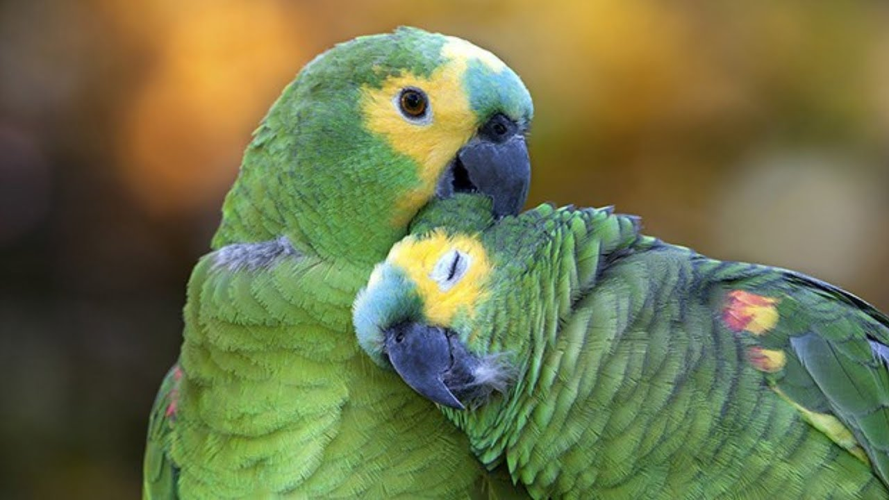

Galeria de Fotos responsiva com CSS e JS
Modelo simples de galeria de fotos usando apenas CSS e JS. Essa galeria trabalha com o modelo mais básico possível. Recomendado para quem quer apenas exibir algumas fotos, sem nenhum outra função mais avançada.
01 / 05

Arara Azul
02 / 05

Arara Canindé
03 / 05

Amazona é um género de papagaios da ordem Psittaciformes, característico da América, existindo desde o sul do México até o Caribe e a América do Sul. São conhecidos, popularmente, como papagaios, louros, ajerus, ajurus, jerus e jurus
04 / 05

Jandaia
05 / 05
Tiriba de testa vermelha